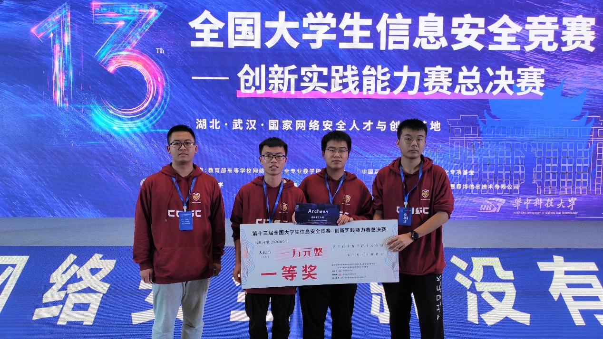

信息安全协会
CDUT Information Security Ass
协会简介
信息安全协会成立于2006年，致力于学习、研究和交流安全技术，营造安全技术交流氛围，创建成理人自己的安全技术社团。
协会积极组织同学学习网络空间安全相关知识，并参加各大ctf比赛，曾在全国大学生信息安全知识大赛、四川省大学生信息安全技术大赛、“强网杯”全国网络安全挑战赛以及省内各大高校的ctf大赛等比赛中获得优异成绩。
协会挂靠计算机与网络安全学院，还经常主持举办成都理工大学校内ctf网络攻防大赛
Dino战队简介
dino战队于2020年正式成立，由其前身Archean战队发展招新后而来。dino战队入驻学院网络攻防实验室，指导老师为成都理工大学计算机与网络安全学院副教授、硕士生导师李冬芬老师。

